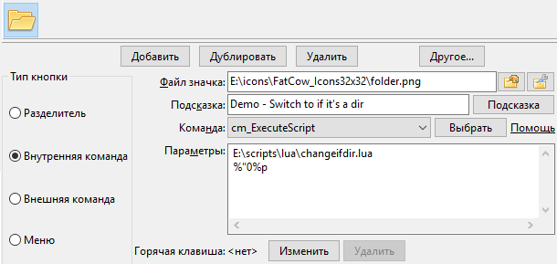
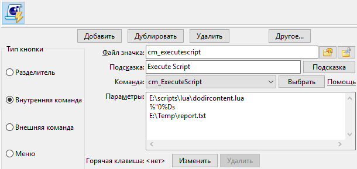
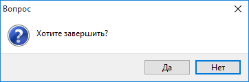
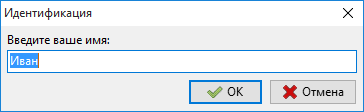

Double Commander может выполнять скрипты Lua с помощью команды cm_ExecuteScript.
Эта возможность добавлена в версии 0.8.
Также на языке Lua возможно писать контентные (или информационные) плагины (WDX-плагины).
Более подробную информацию о языке программирования Lua можно найти на официальном веб-сайте Lua.
Чтобы использовать скрипты Lua, нам требуется интерпретатор Lua версии 5.1, DLL-файл должен лежать рядом с исполняемым файлом Double Commander или в системной папке.
По умолчанию DC ищет файл с именем lua5.1.dll (Windows), liblua5.1.so.0 (Unix или GNU/Linux) или liblua5.1.dylib (Mac OS).
Мы можем использовать DLL-файл проекта LuaJIT (может потребовать ручного изменения имени файла в параметре <PathToLibrary>). LuaJIT сочетает в себе высокоскоростной интерпретатор, написанный на ассемблере, и JIT-компилятор. Также мы получаем библиотеку FFI: с её помощью в скриптах можно будет вызывать внешние функции C и использовать структуры данных C.
Если мы используем 64-битную версию DC, то DLL-файл также должен быть 64-битным.
Как правило, DLL-файл поставляется в дистрибутиве DC, но если по какой-либо причине его нет, можно найти его по этой ссылке или установить с помощью менеджера пакетов.
Double Commander предлагает несколько библиотек функций для скриптов Lua, список представлен ниже.
| Список библиотек | ||
|---|---|---|
| Библиотека | Имя функции | Краткое описание |
| DC | Особые функции Double Commander | |
| SysUtils | Различные системные функции | |
| Clipbrd | Различные функции для работы с буфером обмена | |
| Dialogs | Взаимодействие с пользователем | |
| LazUtf8 | Строковые функции для работы с UTF-8 | |
| OS | Функции, связанные с операционной системой | |
Эта библиотека содержит особые функции Double Commander, все функции представлены в таблице DC.
| Библиотека DC | |
|---|---|
| Функция | Описание |
DC.LogWrite |
DC.LogWrite(Message, MsgType, bForce, bLogFile) Пишет сообщение в окно протокола. Описание:
|
DC.CurrentPanel |
iPanel = DC.CurrentPanel() Получить активную панель: возвращает 0, если активна левая панель, или 1, если правая. DC.CurrentPanel(iPanel) Сделать активной: левую панель, если iPanel равно 0, или правую, если равно 1. |
DC.ExecuteCommand |
DC.ExecuteCommand(Command, Param1, Param2,...,ParamX) Вызывает внутреннюю команду Double Commander Command с параметрами Param1..ParamX. Мы можем подставить столько Param..., сколько поддерживает команда Command. |
В этом примере мы написали простой скрипт, который сделает следующее:
-- 1. Перенести фокус на правую панель. DC.ExecuteCommand("cm_FocusSwap", "side=right") -- 2. Закрыть все вкладки. DC.ExecuteCommand("cm_CloseAllTabs") -- 3. Перейти в указанный каталог. DC.ExecuteCommand("cm_ChangeDir", "e:\\FakeKey\\Documents\\Music") -- 4. Перенести фокус на левую панель. DC.ExecuteCommand("cm_FocusSwap", "side=left") -- 5. Закрыть все вкладки. DC.ExecuteCommand("cm_CloseAllTabs") -- 6. Перейти в указанный каталог. DC.ExecuteCommand("cm_ChangeDir", "C:\\Users\\Public\\Music") -- 7. Открыть новую вкладку. DC.ExecuteCommand("cm_NewTab") -- 8. Перейти в указанный каталог. DC.ExecuteCommand("cm_ChangeDir", "e:\\VirtualMachines\\ShareFolder")
Для выполнения нашего скрипта мы можем создать кнопку на панели инструментов с внутренней командой cm_ExecuteScript.
Предположим, наш скрипт e:\scripts\lua\music.lua, мы могли бы настроить эту кнопку следующим образом:

Кроме того, для редактирования наших скриптов мы можем использовать внутренний редактор Double Commander.
Если файл имеет расширение .lua, то он будет распознан внутренним редактором и открыт с подсветкой синтаксиса, специфичного для языка Lua:

Эта библиотека содержит различные системные функции, все они представлены в таблице SysUtils.
| Библиотека System | |
|---|---|
| Функция | Описание |
SysUtils.Sleep |
SysUtils.Sleep(Milliseconds) Приостанавливает выполнение скрипта на указанное количество миллисекунд (Milliseconds), выполнение сценария будет продолжено после истечения указанного времени. |
SysUtils.GetTickCount |
SysUtils.GetTickCount() Возвращает количество интервалов времени (тиков) с момента старта системы. Это полезно для измерения времени, но не следует делать каких-либо предположений относительно количества времени в интервале между тиками. |
SysUtils.FileExists |
bFlagExists = SysUtils.FileExists(FileName) Проверяет, существует ли в файловой системе определённый файл. FileExists возвращает |
SysUtils.DirectoryExists |
bFlagExists = SysUtils.DirectoryExists(Directory) Проверяет существование Directory в файловой системе и что это действительно каталог. Если это так, то функция возвращает |
SysUtils.FileGetAttr |
Attr = SysUtils.FileGetAttr(FileName) Возвращает в Attr атрибуты файла FileName. Подробное описание возвращаемого значения смотрите здесь. |
SysUtils.FindFirst |
Handle, FindData = SysUtils.FindFirst(Path) Ищет файлы, совпадающие с Path (можно использовать маски). Если файл не найден, Handle будет равно nil. В случае успеха функция вернёт дескриптор поиска Handle для последующих вызовов Таблица FindData содержит информацию о найденном файле или каталоге. Поля таблицы FindData:
|
SysUtils.FindNext |
Result, FindData = SysUtils.FindNext(Handle) Находит следующее вхождение поиска, инициированного FindFirst, Handle — дескриптор поиска, возвращённый функцией FindFirst. В случае успеха функция вернёт Result не равный nil и таблицу FindData, содержащую информацию о найденном файле или каталоге. Замечание: За последним вызовом |
SysUtils.FindClose |
SysUtils.FindClose(Handle) Завершает серию вызовов Вызов этой функции абсолютно необходим, иначе могут возникнуть большие утечки памяти. |
SysUtils.PathDelim |
SysUtils.PathDelim Позволяет получить от DC разделитель пути в системе. В системах Unix/Linux это будет " / " и " \ " в Windows. |
SysUtils.ExtractFileName |
sName = SysUtils.ExtractFileName(FileName) Возвращает имя файла из полного (имя+путь) имени файла. Имя файла содержит все символы после последнего символа разделителя каталогов ("/" или "\") или буквы диска. |
SysUtils.ExtractFilePath |
sPath = SysUtils.ExtractFilePath(FileName) Возвращает путь из полного имени файла (включая букву диска). Путь содержит все символы до последнего символа разделителя каталогов ("/" или "\"), включая сам разделитель каталогов. |
SysUtils.ExtractFileDir |
sDir = SysUtils.ExtractFileDir(FileName) Возвращает только каталог из FileName, включая букву диска. Результат НЕ содержит разделитель каталогов в конце, в отличие от |
SysUtils.ExtractFileDrive |
sDrive = SysUtils.ExtractFileDrive(FileName) Возвращает диск из полного имени файла. Обратите внимание, некоторые операционные системы не поддерживают буквы дисков. |
SysUtils.ExtractFileExt |
sExt = SysUtils.ExtractFileExt(FileName) Возвращает расширение файла (все символы после последней точки, включая сам символ "."). |
SysUtils.CreateDirectory |
bResult = SysUtils.CreateDirectory(Directory) Создаёт цепочку каталогов, Directory - полный путь каталога. Возвращает |
FileGetAttr возвращает атрибуты FileName в виде ИЛИ-совокупности следующих констант:
| Константы, используемые в возвращаемом значении SysUtils.FileGetAttr | |
|---|---|
| Значение | Описание |
0x00000001 faReadOnly | Файл только для чтения. |
0x00000002 faHidden | Скрытый файл. В Unix/Linux это значит, что имя файла начинается с точки. |
0x00000004 faSysFile | Системный файл. В Unix/Linux это может быть символьное или блочное физическое устройство, именованный канал (FIFO). |
0x00000008 faVolumeId | Метка тома (означает, что файл содержит идентификатор (ID) тома). Только для DOS/Windows 9x на обычной файловой системе FAT (не VFAT или FAT32). |
0x00000010 faDirectory | Каталог. |
0x00000020 faArchive | Архивный. Не используется в Unix/Linux. |
0x00000400 faSymLink | Символьная ссылка. |
| Примечание: В случае ошибки функция возвращает -1. | |
Смотрите пример в следующей секции.
Пример скрипта ниже использует SysUtils.FileGetAttr.
Если параметр окажется каталогом, то скрипт откроет его в новой вкладке активной панели и переключится на неё.
local params = {...} local myfileattr if #params == 1 then -- Мы получили один параметр? myfileattr = SysUtils.FileGetAttr(params[1]) if myfileattr > 0 then -- Получили значение атрибута? if math.floor(myfileattr / 0x00000010) % 2 ~= 0 then -- 0x00000010 присутствует? Тогда это каталог. DC.ExecuteCommand("cm_NewTab") DC.ExecuteCommand("cm_ChangeDir", params[1]) end end end
В приведённом выше примере param[1] является первым параметром, переданным скрипту.
При использовании внутренней команды cm_ExecuteScript это будет первый параметр, переданный после имени файла скрипта.
Итак, в нашем примере мы можем создать на панели инструментов кнопку, как показано ниже:

В этом примере скрипту будет передан параметр %"0%p: имя выделенного в активной панели файла или папки, без кавычек.
В следующем примере мы просканируем содержимое каталога, переданного первым параметром, и сохраним полученные данные в текстовый файл с именем, переданным вторым параметром.
Это даст нам хорошее представление об использовании FindFirst, FindNext и FindClose.
local params = {...} if #params == 2 then -- У нас есть два параметра? local Result = nil local OutputFile = nil OutputFile = io.output(params[2]) local Handle,FindData = SysUtils.FindFirst(params[1] .. "\\*") if Handle ~= nil then repeat io.write(FindData.Name .. "\r") io.write(FindData.Size .. "\r") io.write("---------------\r") Result,FindData = SysUtils.FindNext(Handle) until Result == nil SysUtils.FindClose(Handle) io.close(OutputFile) end end
В приведённом выше примере нам нужно передать скрипту два параметра:
Настраиваем кнопку на панели инструментов с внутренней командой cm_ExecuteScript и передаём параметрами всё необходимое:

В этом примере скрипту в качестве первого параметра будет передано %"0%Ds: имя каталога активной панели, без кавычек.
Double Commander предоставляет скриптам Lua библиотеку функций для работы с буфером обмена.
| Библиотека Clipboard | |
|---|---|
| Функция | Описание |
Clipbrd.Clear |
Clipbrd.Clear() Очищает содержимое буфера обмена. |
Clipbrd.GetAsText |
StringVar = Clipbrd.GetAsText() Получает содержимое буфера обмена как строку StringVar. |
Clipbrd.SetAsText |
Clipbrd.SetAsText(StringVar) Помещает в буфер обмена строку текста StringVar. |
Clipbrd.SetAsHtml |
Clipbrd.SetAsHtml(Html) Добавляет в буфер обмена текст Html в формате HTML (формат буфера обмена Содержимое может быть вставлено в приложения, поддерживающие этот формат буфера обмена, такие как MS Word, LO Writer и другие. Правильным будет сохранять данные с помощью и Например, у нас может быть следующее:
Если мы запустим Блокнот и попытаемся вставить текст из буфера обмена, то будет вставлен текст, скопированный с помощью |
В следующем примере используются три функции, связанные с буфером обмена: Clear, GetAsText и SetAsText.
Это относительно большой скрипт, но было бы неплохо собрать вместе несколько функций, с которыми мы познакомились ранее.
Предполагается, что в нашей активной панели открыт каталог с большим количеством текстовых файлов.
Также предполагается, что в настоящее время в буфере обмена одно слово и что скрипт в качестве единственного параметра получит текущий каталог активной панели.
Скрипт будет сканировать папку, читать содержимое файлов, один за другим, и искать слово из буфера обмена.
Затем имена файлов, которые содержат это словом, будут скопированы в буфер обмена.
Далее скрипт вызовет внутреннюю команду cm_LoadSelectionFromClip и все эти файлы будут выделены.
Кроме того, в конце вернём обратно в буфер обмена слово, которое мы искали.
local params = {...} local Result = nil local myfileattr local bFound = false local sCompleteFilename = "" local InputFile = nil local line = "" local iPosS local iPosE local sFileToSelect = "" local sSearchString = "" if #params == 1 then -- Мы получили наш параметр? sSearchString = Clipbrd.GetAsText() -- Получаем выражение для поиска. Clipbrd.Clear() -- Очищаем буфер обмена. DC.ExecuteCommand("cm_MarkUnmarkAll") -- Убедимся, что ничего не выделено. -- Начинаем сканировать все файлы нашего каталога один за другим. local Handle,FindData = SysUtils.FindFirst(params[1] .. "\\*") if Handle ~= nil then repeat sCompleteFilename = params[1] .. "\\" .. FindData.Name myfileattr = SysUtils.FileGetAttr(sCompleteFilename) if myfileattr > 0 then -- Получили значение атрибута? -- Нам нужен файл, не каталог! if math.floor(myfileattr / 0x00000010) % 2 == 0 then -- Начинаем читать файл построчно, до конца файла ИЛИ до совпадения. InputFile = io.open(sCompleteFilename, "r") bFound = false while bFound == false do line = InputFile:read() if line == nil then break end iPosS, iPosE = string.find(line, sSearchString) if iPosS ~= nil then bFound = true end end if bFound == true then sFileToSelect = sFileToSelect .. FindData.Name .. "\n" end io.close(InputFile) end end Result,FindData = SysUtils.FindNext(Handle) until Result == nil SysUtils.FindClose(Handle) end -- Если что-то нашли, то выделяем! if sFileToSelect ~= "" then Clipbrd.SetAsText(sFileToSelect) DC.ExecuteCommand("cm_LoadSelectionFromClip") end Clipbrd.SetAsText(sSearchString) -- Восстанавливаем содержимое буфера обмена. end
Эта библиотека позволяет нашим скриптам взаимодействовать с пользователем, показывая сообщения, выдавая запросы и т.д.
| Библиотека Dialogs | |
|---|---|
| Функция | Описание |
Dialogs.MessageBox |
ButPressed = Dialogs.MessageBox(Message, Title, ButFlags) Показывает окно сообщения, функция вернёт нажатую пользователем кнопку. Описание:
|
Dialogs.InputQuery |
bAck, sAnswer = Dialogs.InputQuery(Title, Msg, bMask, sDefault) Показывает диалоговое окно с полем ввода текста. Описание:
|
Dialogs.InputListBox |
sAnswer = Dialogs.InputListBox(Title, Msg, Items, sDefault) Показывает диалоговое окно с возможностью выбора из списка элементов. Описание:
|
Кнопки, отображаемые в окне Dialogs.MessageBox, задаются одним из следующих значений:
| Константы для кнопок в Dialogs.MessageBox | |
|---|---|
| Значение константы | Отображаемые кнопки, слева направо |
0x0000 MB_OK | |
0x0001 MB_OKCANCEL | |
0x0002 MB_ABORTRETRYIGNORE | |
0x0003 MB_YESNOCANCEL | |
0x0004 MB_YESNO | |
0x0005 MB_RETRYCANCEL | |
Стиль окна Dialogs.MessageBox задаётся одним из следующих значений:
| Константы, задающие значок и стиль окна Dialogs.MessageBox | |
|---|---|
| Значение константы | Стиль окна |
0x0040 MB_ICONINFORMATION | Информационное окно |
0x0030 MB_ICONWARNING | |
0x0020 MB_ICONQUESTION | Окно подтверждения |
0x0010 MB_ICONERROR | |
Кнопка по умолчанию (активная) в Dialogs.MessageBox задаётся одним из следующих значений:
| Константы, задающие кнопку по умолчанию в Dialogs.MessageBox | |
|---|---|
| Значение константы | Кнопка по умолчанию |
0x0000 MB_DEFBUTTON1 | Первая кнопка слева |
0x0100 MB_DEFBUTTON2 | Вторая кнопка слева |
0x0200 MB_DEFBUTTON3 | Третья кнопка слева |
Число, возвращаемое функцией Dialogs.MessageBox, указывает на кнопку, которую нажал пользователь, и может быть одним из следующих:
| Возвращаемое значение Dialogs.MessageBox | |
|---|---|
| Значение константы | Нажатая кнопка |
0x0000 mrNone | Кнопка не нажата |
0x0001 mrOK | |
0x0002 mrCancel | |
0x0003 mrAbort | |
0x0004 mrRetry | |
0x0005 mrIgnore | |
0x0006 mrYes | |
0x0007 mrNo | |
Примечание: Если закрыть окно, нажав крестик "x" в углу окна или клавишу Esc, то функция вернёт 0x0002, как нажатие кнопки Отмена.
Маленький скрипт, использующий Dialogs.MessageBox:
-- Отображаемые кнопки MB_OK = 0x0000 MB_OKCANCEL = 0x0001 MB_ABORTRETRYIGNORE = 0x0002 MB_YESNOCANCEL = 0x0003 MB_YESNO = 0x0004 MB_RETRYCANCEL = 0x0005 -- Стиль окна MB_ICONINFORMATION = 0x0040 MB_ICONWARNING = 0x0030 MB_ICONQUESTION = 0x0020 MB_ICONERROR = 0x0010 -- Кнопка по умолчанию MB_DEFBUTTON1 = 0x0000 MB_DEFBUTTON2 = 0x0100 MB_DEFBUTTON3 = 0x0200 -- Возвращаемое значение mrNone = 0x0000 mrOK = 0x0001 mrCancel = 0x0002 mrAbort = 0x0003 mrRetry = 0x0004 mrIgnore = 0x0005 mrYes = 0x0006 mrNo = 0x0007 ButFlags = MB_YESNO + MB_ICONQUESTION + MB_DEFBUTTON2 ButPressed = Dialogs.MessageBox("Хотите завершить?", "Вопрос", ButFlags) if ButPressed == mrYes then DC.ExecuteCommand("cm_Exit") end

Маленький скрипт, использующий Dialogs.InputQuery:
bAck, sAnswer = Dialogs.InputQuery("Идентификация", "Введите ваше имя:", false, "Иван") if bAck == true then Dialogs.MessageBox("Привет, " .. sAnswer .. "!", "Добро пожаловать!", 0x0040) end

Эта библиотека обеспечивает базовую поддержку кодировки UTF-8.
Все функции представлены в таблице LazUtf8.
| Библиотека UTF-8 | |
|---|---|
| Функция | Описание |
LazUtf8.Pos |
Result = LazUtf8.Pos(SearchText, SourceText, Offset) Поиск подстроки в строке, начиная с определённой позиции. Поиск чувствителен к регистру. Возвращает позицию первого вхождения подстроки SearchText в строке SourceText, поиск начинается с позиции Offset (по умолчанию 1). Если в SourceText не найдено совпадение с SearchText после заданного Offset, то функция возвращает ноль. |
LazUtf8.Copy |
Result = LazUtf8.Copy(Source, Index, Count) Копирует (извлекает) часть строки. Функция возвращает Count символов из строки Source, начиная с позиции Index. Если Count больше длины строки Source, то результат усекается. Если Index больше длины строки Source, то возвращается пустая строка. |
LazUtf8.Length |
Result = LazUtf8.Length(String) Возвращает количество символов в строке с учётом кодировки UTF-8. |
LazUtf8.UpperCase |
Result = LazUtf8.UpperCase(String) Возвращает строку, в которой все буквы в нижнем регистре (строчные) заменены на буквы в верхнем регистре (прописные или заглавные). |
LazUtf8.LowerCase |
Result = LazUtf8.LowerCase(String) Возвращает строку, в которой все буквы в верхнем регистре (прописные или заглавные) заменены на буквы в нижнем регистре (строчные). |
LazUtf8.ConvertEncoding |
Result = LazUtf8.ConvertEncoding(String, FromEnc, ToEnc) Конвертирует кодировку String из FromEnc в ToEnc. Список поддерживаемых значений кодировок:
В Windows с русской локалью:
|
Эта библиотека содержит функции, связанные с операционной системой, в которой запущен Double Commander.
Список доступных функций:
| Библиотека OS | |
|---|---|
| Функция | Описание |
os.execute |
resultcode = os.execute(command) Выполнить command, аналогично введённой в командной строке, будет возвращён код завершения. command может быть:
|
os.tmpname |
tempfilename = os.tmpname() Возвращает строку с именем файла, который может быть использован в качестве временного файла. |
os.remove |
bresult, errorstr, errorno = os.remove(filename) Удалить файл с именем filename. Если удалось, функция вернёт true. Если не удалось, функция вернёт:
|
os.rename |
bresult, errorstr, errorno = os.rename(nameS, nameD) Переименовать файл nameS в nameD. Если удалось, функция вернёт true. Если не удалось, функция вернёт:
|
os.getenv |
value = os.getenv(variablename) Получить в value значение переменной окружения variablename. |